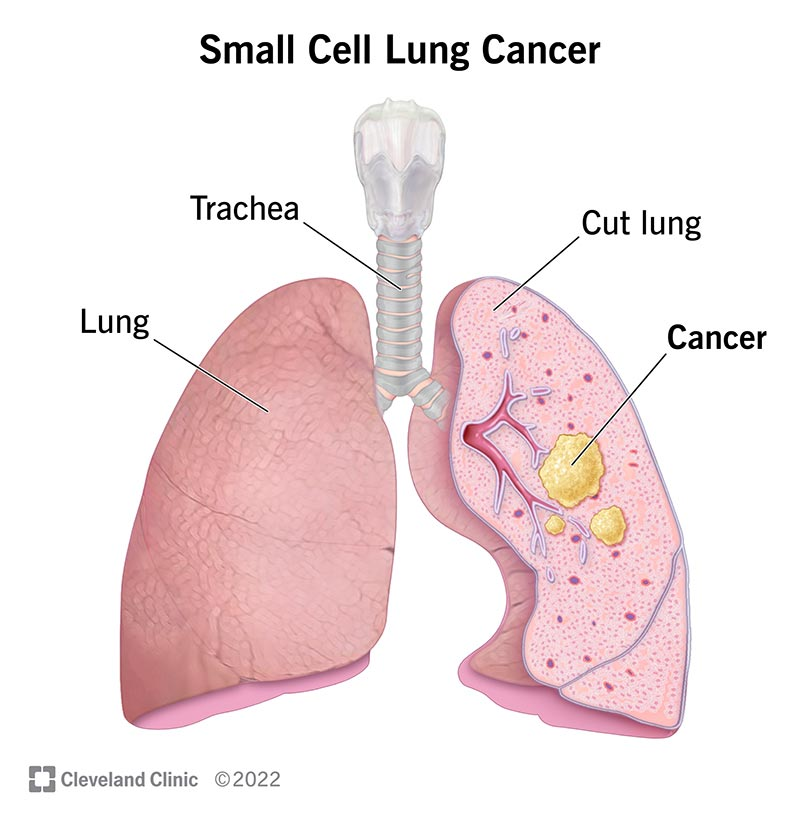

Lung cancer is a kind of cancer that starts as a growth of cells in the lungs.
The lungs are two spongy organs in the chest that control breathing.
Lung cancer is the leading cause of cancer deaths worldwide.
People who smoke have the greatest risk of lung cancer. The risk of lung cancer
increases with the length of time and number of cigarettes smoked. Quitting smoking,
even after smoking for many years, significantly lowers the chances of developing lung cancer.
Lung cancer also can happen in people who have never smoked.

Small cell lung cancer
×

Symptoms
Lung cancer typically doesn't cause symptoms early on.
Symptoms of lung cancer usually happen when the disease is advanced.
Signs and symptoms of lung cancer that happen in and around the lungs may include:
- A new cough that doesn't go away.
- Chest pain.
- Coughing up blood, even a small amount.
- Hoarseness.
- Shortness of breath.
- Wheezing.
Signs and symptoms that happen when lung cancer spreads to other parts of the body may include:
- Bone pain.
- Headache.
- Losing weight without trying.
- Loss of appetite.
- Swelling in the face or neck.
When to see doctor
Make an appointment with your doctor or other healthcare professional if you have any symptoms that worry
you.
If you smoke and haven't been able to quit, make an appointment. Your healthcare professional can recommend
strategies
for quitting smoking.These may include counseling, medicines and nicotine replacement products.
Causes
Lung cancer happens when cells in the lungs develop changes in their DNA.
A cell's DNA holds the instructions that tell a cell what to do. In healthy cells,
the DNA gives instructions to grow and multiply at a set rate. The instructions tell
the cells to die at a set time. In cancer cells, the DNA changes give different instructions.
The changes tell the cancer cells to make many more cells quickly. Cancer cells can keep living when
healthy cells would die. This causes too many cells.
The cancer cells might form a mass called a tumor. The tumor can grow to invade and destroy healthy body
tissue.
In time, cancer cells can break away and spread to other parts of the body. When cancer spreads, it's called
metastatic cancer.
Smoking causes most lung cancers. It can cause lung cancer in both people who smoke and in people exposed to
secondhand smoke. But lung cancer also happens
in people who never smoked or been exposed to secondhand smoke. In these people, there may be no clear cause
of lung cancer.
How smoking causes lung cancer
Researchers believe smoking causes lung cancer by damaging the cells that line the lungs. Cigarette smoke is
full of cancer-causing substances, called carcinogens.
When you inhale cigarette smoke, the carcinogens cause changes in the lung tissue almost immediately.
At first your body may be able to repair this damage. But with each repeated exposure, healthy cells that
line your
lungs become more damaged. Over time, the damage causes cells to change and eventually cancer may develop.
Types of Lung Cancer
Lung cancer is divided into two major types based on the appearance of the cells under a microscope.
Your healthcare professional makes treatment decisions based on which major type of lung cancer you have.
The two general types of lung cancer include:
Small cell lung cancer. Small cell lung cancer usually only happens in people who have smoked
heavily for years.
Small cell lung cancer is less common than non-small cell lung cancer.
Non-small cell lung cancer.Non-small cell lung cancer is a category that includes several
types of lung cancers.
Non-small cell lung cancers include squamous cell carcinoma, adenocarcinoma and large cell carcinoma.
Risk factors
A number of factors may increase the risk of lung cancer. Some risk factors can be controlled,
for instance, by quitting smoking. Other factors can't be controlled, such as your family history.
Some of the risk factors for lung cancer include:
Smoking
Your risk of lung cancer increases with the number of cigarettes you smoke each day. Your risk also increases
with the number of
years you have smoked. Quitting at any age can significantly lower your risk of developing lung cancer.
Exposure to secondhand smoke
Even if you don't smoke, your risk of lung cancer increases if you're around people who are smoking.
Breathing the smoke in the
air from other people who are smoking is called secondhand smoke.
Previous radiation therapy
If you've had radiation therapy to the chest for another type of cancer, you may have an increased risk of
developing lung cancer.
Family history
People with a parent, sibling or child with lung cancer have an increased risk of the disease.
Exposure to radon gas
Radon is produced by the natural breakdown of uranium in soil, rock and water. Radon eventually becomes part
of the air you breathe.
Unsafe levels of radon can build up in any building, including homes.
Exposure to cancer-causing substances
Workplace exposure to cancer-causing substances, called carcinogens, can increase your risk of developing
lung cancer. The risk may be higher if you smoke.
Carcinogens linked to lung cancer risk include asbestos, arsenic, chromium and nickel.
Complications
Lung cancer can cause complications, such as:
Shortness of breath
People with lung cancer can experience shortness of breath if cancer grows to block the major airways. Lung
cancer also can cause fluid to collect
around the lungs and heart. The fluid makes it harder for the affected lung to expand fully when you inhale.
Coughing up blood
Lung cancer can cause bleeding in the airway. This can cause you to cough up blood. Sometimes bleeding can
become severe.
Treatments are available to control bleeding.
Pain
Advanced lung cancer that spreads can cause pain. It may spread to the lining of a lung or to another area of
the body, such as a bone. Tell your
healthcare professional if you experience pain. Many treatments are available to control pain.
Fluid in the chest
Lung cancer can cause fluid to accumulate in the chest, called pleural effusion. The fluid collects in the
space that
surrounds the affected lung in the chest cavity, called the pleural space.
Pleural effusion can cause shortness of breath. Treatments are available to drain the fluid from your chest.
Treatments
can reduce the risk that pleural effusion will happen again.
Cancer that spreads to other parts of the body
Lung cancer often spreads to other parts of the body. Lung cancer may spread to the brain and the bones.
Cancer that spreads can cause pain, nausea, headaches or other symptoms depending on what organ is affected.
Once lung cancer has spread beyond the lungs, it's generally not curable.
Treatments are available to decrease symptoms and to help you live longer.
Prevention
There's no sure way to prevent lung cancer, but you can reduce your risk if you:
Don't smoke
If you've never smoked, don't start. Talk to your children about not smoking so that they can understand how
to avoid this major risk factor for lung cancer. Begin conversations
about the dangers of smoking with your children early so that they know how to react to peer pressure.
Stop smoking
Stop smoking now. Quitting reduces your risk of lung cancer, even if you've smoked for years. Talk to your
healthcare team about strategies and aids that
can help you quit. Options include nicotine replacement products, medicines and support groups.
Avoid secondhand smoke
If you live or work with a person who smokes, urge them to quit. At the very least,
ask them to smoke outside. Avoid areas where people smoke, such as bars. Seek out smoke-free options.
Test your home for radon
Have the radon levels in your home checked, especially if you live in an area where radon is known to be a
problem.
High radon levels can be fixed to make your home safer. Radon test kits are often sold at hardware stores and
can be
purchased online. For more information on radon testing, contact your local department of public health.
Avoid carcinogens at work
Take precautions to protect yourself from exposure to toxic chemicals at work.
Follow your employer's precautions. For instance, if you're given a face mask for protection,
always wear it. Ask your healthcare professional what more you can do to protect yourself at work.
Your risk of lung damage from workplace carcinogens increases if you smoke.
Eat a diet full of fruits and vegetables
Choose a healthy diet with a variety of fruits and vegetables. Food sources of vitamins and nutrients are
best.
Avoid taking large doses of vitamins in pill form, as they may be harmful. For instance, researchers hoping to
reduce
the risk of lung cancer in people who smoked heavily gave them beta carotene supplements. Results showed the
supplements
increased the risk of cancer in people who smoke.
Exercise most days of the week
If you don't exercise regularly, start out slowly. Try to exercise most days of the week.
Diagnosis
 Bronchoscopy
Bronchoscopy
×

Lung cancer diagnosis often starts with an imaging test to look at the lungs. If you have symptoms that
worry you, a healthcare professional might start with an X-ray. If you smoke or used to smoke, you might have
an imaging test to look for signs of lung cancer before you develop symptoms.
Testing healthy people for lung cancer
People with an increased risk of lung cancer may consider yearly lung cancer screening using low-dose CT scans.
Lung cancer screening is generally offered to people 50 and older who smoked heavily for many years. Screening
also is offered to people who have quit smoking in the past 15 years.
Discuss your lung cancer risk with your healthcare professional. Together you can decide whether lung cancer
screening is right for you.
Tests to diagnose lung cancer
If your healthcare professional thinks you may have lung cancer, a number of tests can be used to look for
cancerous cells and to rule out other conditions.
-
Imaging tests. Imaging tests make pictures of the body. They can show the location and
size of the lung cancer. Tests might include X-ray, MRI, CT and positron emission tomography, which also is
called a PET scan.
-
Sputum cytology. Sputum is the mucus that is coughed up from the lungs. If you are
coughing up sputum, it can be looked at under a microscope. The sputum can sometimes show lung cancer cells.
-
Biopsy. A biopsy is a procedure to remove a sample of tissue for testing in a lab.
Your healthcare team can perform a lung cancer biopsy several ways. One way is bronchoscopy. During
bronchoscopy, a healthcare professional passes a lighted tube with a camera down your throat into your lungs
to examine the area. Special tools can be passed through the tube to collect a sample of tissue.
Mediastinoscopy also is an option. During mediastinoscopy, an incision is made at the base of your neck.
Surgical tools are then inserted behind your breastbone to take tissue samples from lymph nodes.
Another option is a needle biopsy. In a needle biopsy, your healthcare professional uses X-ray or CT images
to guide a needle through the skin on your chest. The needle goes into the lung tissue to collect cells that
could be cancerous.
A biopsy sample also may be taken from lymph nodes or other areas where cancer has spread.
Additional Tests
Other tests to diagnose asthma include:
-
Methacholine Challenge
Methacholine is a known asthma trigger. When inhaled, it will cause your airways to narrow slightly. If you
react to the methacholine, you likely have asthma. This test may be used even if your initial lung function
test is normal.
-
Imaging Tests
A chest X-ray can help identify any structural abnormalities or diseases (such as infection) that can cause
or aggravate breathing problems.
-
Allergy Testing
Allergy tests can be performed by a skin test or blood test. They tell you if you're allergic to pets,
dust, mold, or pollen. If allergy triggers are identified, your doctor may recommend allergy shots.
-
Nitric Oxide Test
This test measures the amount of the gas nitric oxide in your breath. When your airways are inflamed — a
sign of asthma — you may have higher than normal nitric oxide levels. This test isn't widely available.
-
Sputum Eosinophils
This test looks for certain white blood cells (eosinophils) in the mixture of saliva and mucus (sputum) you
discharge during coughing. Eosinophils are present when symptoms develop and become visible when stained
with a rose-colored dye.
-
Provocative Testing
In these tests, your doctor measures your airway obstruction before and after you perform vigorous physical
activity or take several breaths of cold air.
How Asthma is Classified
To classify your asthma severity, your doctor will consider how often you have signs and symptoms and how
severe they are. Your doctor will also consider the results of your physical exam and diagnostic tests.
Determining your asthma severity helps your doctor choose the best treatment. Asthma severity often changes
over time, requiring treatment adjustments.
Asthma Classification
| Asthma Classification |
Signs and Symptoms |
| Mild Intermittent |
Mild symptoms up to two days a week and up to two nights a month |
| Mild Persistent |
Symptoms more than twice a week, but no more than once in a single day |
| Moderate Persistent |
Symptoms once a day and more than one night a week |
| Severe Persistent |
Symptoms throughout the day on most days and frequently at night |
Treatment of Asthma
Prevention and long-term control are key to stopping asthma attacks before they start. Treatment usually
involves learning to recognize your triggers, taking steps to avoid triggers and tracking your breathing to make
sure your medications are keeping symptoms under control. In case of an asthma flare-up, you may need to use a
quick-relief inhaler.
Medications
The right medications for you depend on a number of things — your age, symptoms, asthma triggers and
what works best to keep your asthma under control.
Preventive, long-term control medications reduce the swelling (inflammation) in your airways that leads to
symptoms.
Quick-relief inhalers (bronchodilators) quickly open swollen airways that are limiting breathing. In some cases,
allergy
medications are necessary.
Long-term Control Medications generally taken daily, are the cornerstone of asthma treatment.
These medications keep asthma under control on a day-to-day
basis and make it less likely you'll have an asthma attack. Types of long-term control medications include:
- Inhaled corticosteroids: These medications include fluticasone propionate (Flovent HFA,
Flovent Diskus, Xhance),
budesonide (Pulmicort Flexhaler, Pulmicort Respules, Rhinocort), ciclesonide (Alvesco), beclomethasone (Qvar
Redihaler),
mometasone (Asmanex HFA, Asmanex Twisthaler) and fluticasone furoate (Arnuity Ellipta).You may need to use
these medications for several days to weeks before they reach their maximum benefit. Unlike oral
corticosteroids,
inhaled corticosteroids have a relatively low risk of serious side effects.
- Leukotriene modifiers: These oral medications — including montelukast (Singulair),
zafirlukast (Accolate)
and zileuton (Zyflo)— help relieve asthma symptoms.
Montelukast has been linked to psychological reactions, such as agitation, aggression, hallucinations,
depression and suicidal thinking.
Seek medical advice right away if you experience any of these reactions.
- Combination inhalers: These medications — such as fluticasone-salmeterol
(Advair HFA, Airduo Digihaler, others), budesonide-formoterol (Symbicort), formoterol-mometasone
(Dulera) and fluticasone furoate-vilanterol (Breo Ellipta) — contain a long-acting beta agonist
along with a corticosteroid.
- Theophylline: Theophylline (Theo-24, Elixophyllin, Theochron) is a daily pill that helps
keep the airways open by relaxing
the muscles around the airways. It's not used as often as other asthma medications and requires regular blood
tests.
Quick-relief Medications are used as needed for rapid, short-term symptom relief during an
asthma attack. They may also be used before exercise if your doctor recommends it. Types of quick-relief
medications include:
- Short-acting beta agonists:These inhaled, quick-relief bronchodilators act within minutes
to rapidly ease symptoms during an asthma attack. They include albuterol (ProAir HFA, Ventolin HFA, others)
and levalbuterol (Xopenex, Xopenex HFA).
Short-acting beta agonists can be taken using a portable, hand-held inhaler or a nebulizer, a machine that
converts asthma medications to a fine mist. They're inhaled through a face mask or mouthpiece.
- Anticholinergic agents: Like other bronchodilators, ipratropium (Atrovent HFA) and
tiotropium (Spiriva, Spiriva Respimat) act quickly to immediately relax your airways, making it easier to
breathe. They're mostly used for emphysema and chronic bronchitis, but can be used to treat asthma.
- Oral and intravenous corticosteroids: These medications — which include prednisone
(Prednisone Intensol, Rayos) and methylprednisolone (Medrol, Depo-Medrol, Solu-Medrol) — relieve airway
inflammation caused by severe asthma. They can cause serious side effects when used long term, so these drugs
are used only on a short-term basis to treat severe asthma symptoms.
If you have an asthma flare-up, a quick-relief inhaler can ease your symptoms right away. But you shouldn't
need to use your quick-relief inhaler very often if your long-term control medications are working properly.
Keep a record of how many puffs you use each week. If you need to use your quick-relief inhaler more often than
your doctor recommends, see your doctor. You probably need to adjust your long-term control medication.
Allergy Medications
Allergy medications may help if your asthma is triggered or worsened by allergies:
- Allergy shots (immunotherapy): Over time, allergy shots gradually reduce your immune system
reaction to specific allergens. You generally receive shots once a week for a few months, then once a month
for a period of three to five years.
- Biologics: These medications — which include omalizumab (Xolair), mepolizumab (Nucala),
dupilumab (Dupixent), reslizumab (Cinqair) and benralizumab (Fasenra) — are specifically for people who have
severe asthma.
Bronchial Thermoplasty
This treatment is used for severe asthma that doesn't improve with inhaled corticosteroids or other long-term
asthma medications. It isn't widely available nor right for everyone.
During bronchial thermoplasty, your doctor heats the insides of the airways in the lungs with an electrode. The
heat reduces the smooth muscle inside the airways. This limits the ability of the airways to tighten, making
breathing easier and possibly reducing asthma attacks. The therapy is generally done over three outpatient
visits.
Treat by severity for better control: A stepwise approach
Your treatment should be flexible and based on changes in your symptoms. Your doctor should ask about your
symptoms at each visit. Based on your signs and symptoms, your doctor can adjust your treatment accordingly.
For example, if your asthma is well controlled, your doctor may prescribe less medication. If your asthma isn't
well controlled or is getting worse, your doctor may increase your medication and recommend more-frequent
visits.
Asthma action plan
Work with your doctor to create an asthma action plan that outlines in writing when to take certain medications
or when to increase or decrease the dose of your medications based on your symptoms. Also include a list of your
triggers and the steps you need to take to avoid them.
Your doctor may also recommend tracking your asthma symptoms or using a peak flow meter on a regular basis to
monitor how well your treatment is controlling your asthma.